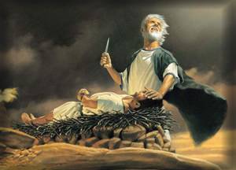

Abraham and the Covenant of Promise (Genesis 12-22)
"I will bless you and make your name great, so that you will be a blessing." (Genesis 12:2)
With Abraham, the story of salvation takes a decisive turn. God calls a man from Ur and makes a covenant that will shape the destiny of nations. Abraham's journey is not just geographical - it is spiritual, marked by faith, obedience, and divine promise.

The Call and the Covenant
God's call to Abraham is radical: leave your country, your family, and your security. In return, God promises land, descendants, and blessing. This covenant is unconditional and eternal, rooted in God's faithfulness rather than human merit.
- Land: A place of promise and inheritance.
- Descendants: As numerous as the stars.
- Blessing: A global mission through one family.
Faith Tested and Refined
Abraham's journey is not without struggle. He faces famine, conflict, and delay. Yet he believes, and it is counted to him as righteousness. The ultimate test comes in Genesis 22, when God asks him to sacrifice Isaac. Abraham obeys, and God provides a ram in place of the son.
This moment foreshadows the cross: a beloved son, a sacrificial substitute, and a mountain of mercy.
Relevance to Salvation
- Salvation is rooted in God's covenant, not human achievement.
- Faith is the pathway to righteousness.
- God provides the sacrifice - pointing to Christ, the Lamb of God.
"And in your offspring shall all the nations of the earth be blessed." (Genesis 22:18)